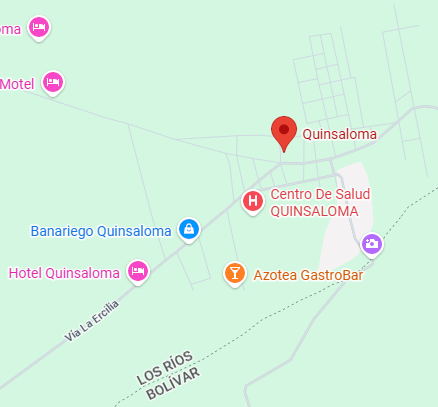

Reseña: Es el cantón más joven de Los Ríos, creado legalmente en el año 2007. Destaca por su ubicación estratégica al pie de las estribaciones de la cordillera y por su alta productividad en cítricos (naranjas, mandarinas) y cacao.
Urbanas: Quinsaloma.
Rurales: No posee parroquias rurales formalizadas.
Maito de pescado de río, chicha de maíz y seco de chivo fluminense.
Río Umbe: Famoso balneario de agua dulce rodeado de rocas y vegetación nativa que atrae a turistas de provincias vecinas.
Cascadas de la zona alta: Senderos naturales que llevan a caídas de agua idóneas para el ecoturismo de aventura.
Hostal Quinsaloma, Hospedaje Las Palmas.
Cristhian Aldáz Carrillo.
\
20.000 habitantes.
